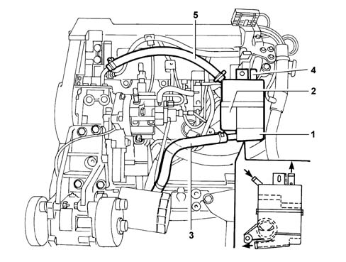

CRANKCASE VAPOUR RECIRCULATION CIRCUIT (BLOW-BY)
- Path
- Descriptions > 10 ENGINE > CRANKCASE VAPOUR RECIRCULATION CIRCUIT (BLOW-BY)
- Kind
- system description
- Applies to
- engines: 2.8 JTD 8V; all production periods
- Interactive page
- https://sloeber94.github.io/elrnDB-fDct/en/#/244000367
Applies to: engines: 2.8 JTD 8V; all production periods
The diagram below shows the crankcase vapour recirculation system.

- 1 - Gas separator.
- 2 - Connection between crankcase and gas separator.
- 3 - Pipe connecting gas separator and engine sump.
- 4 - Pipe connecting separator to intake circuit.
- 5 - Pipe connecting cylinder head to gas separator.
The engine crankcase emissions consists of mixtures of air/diesel and exhaust gases that escape through the piston seals in addition to lubricant oil vapours.
These vapours are known as blow-by or breather gases; the breather gases coming from both the crankcase (2) and the cylinder head (5) reach the separator (1).
In the separator (1) the gases lose some of the oil dissolved in them and it returns to the sump via the pipe (3) in the form of droplets.
The remaining gas is directed to the intake circuit via the pipe (4).